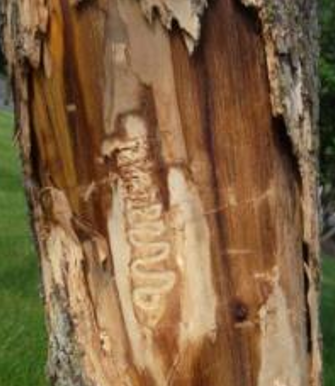
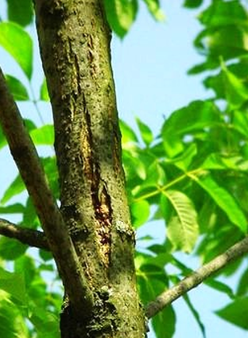

How to mark a tree
Galleries - When the bark has fallen away, there may be evidence of the larva in the tree. They create tracks through the tree as they eat and grow.
Bark cracking (splitting) - Bark splitting can occur in response to various environmental factors at different times of the year. Bark splits are not likely to be fatal to trees, although they will, in some cases, allow entry of diseases organisms, like the EAB, which can cause decay.
